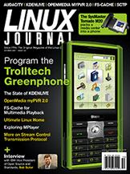

Shutdown Archive web server
Search:
Linux Journal
Issue #162/October 2007

Features
The Tornado M20 Phone and Digital Media Center
by Mike Diehl
Is it a PC, media center or phone?
OpenMedia myPVR 2.0
by Jes Hall
MythTV made easy.
Getting Started with the Trolltech Greenphone SDK
by Robert Hartley
Open beats iPhone.
KDENLIVE Is a Promising Work in Progress
by Dan Sawyer
KDE-enliven your videos.
Indepth
Interview with Bob Sutor
by Glyn Moody
Bob Sutor on open source and standards.
The Ultimate Linux Home
by Jon "maddog" Hall
The Home of the Future awaits.
Stream Control Transmission Protocol (SCTP) Associations
by Jan Newmarch
Associations and connections.
Multimedia Dynamite
by Girish Venkatachalam
Much more than a GUI media player.
FS-Cache and FUSE for Media Playback QoS
by Ben Martin
Playback smoothing.
Columns
Reuven M. Lerner's At the Forge
Incremental Form Submission
Marcel Gagné's Cooking with Linux
Your Voice, Forever Etched in Electrons
Dave Taylor's Work the Shell
Yahtzee
as a Shell Script? When Will It End?
Jon "maddog" Hall's Beachhead
Get FOSSED
Doc Searls' Linux for Suits
Atlas: Hoisting a New World of Search
Nicholas Petreley's /var/opinion
More Power to Linux
In Every Issue
Letters
upFRONT
Tech Tips
New Products
Archive Index
Shutdown Archive web server
Search:
Copyright © 1994 - 2018
Linux Journal
. All rights reserved.